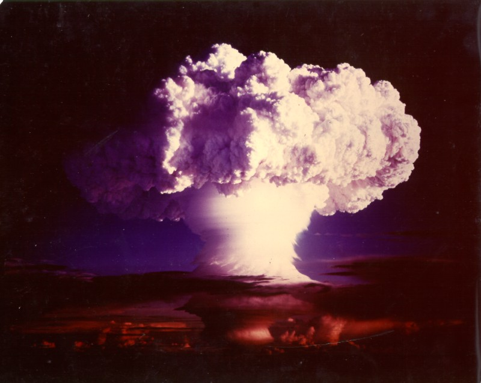

Directions: Fill in the chart as we study each stage of the lesson. Keep this page in your notebook. You will use it again on the review day before the unit test.

| Stage | Date | What changed | Evidence | Cost or risk |
|---|---|---|---|---|
| The arsenal grows | ||||
| The doctrine | ||||
| The home front | ||||
| The secret war | ||||
| The wider contest |
The rivalry in one sentence. Finish this sentence in your own words, using at least two rows of the chart as evidence. Nuclear weapons changed the rules of the rivalry because...
| Stage | Date | What changed | Evidence | Cost or risk |
|---|---|---|---|---|
| The arsenal grows | 1952 to 1954 | Weapons rose from kilotons to megatons, and both sides held thermonuclear weapons. | Ivy Mike, estimated 10.4 megatons, 1952; Soviet test, August 1953; Castle Bravo, estimated 15 megatons, 1954. | Castle Bravo ran far beyond prediction and spread fallout beyond the test area. |
| The doctrine | January 1954 | The United States declared it would answer aggression with a threatened full nuclear strike. | Dulles on massive retaliatory power and retaliating instantly, by means and at places of American choosing. | Brinkmanship requires walking to the edge of war, which can go over the edge by error or pride. |
| The home front | 1951 onward | Fear of atomic attack became a school routine and a household project. | The Duck and Cover film, school drills, and family fallout shelters. | A desk protects against glass at a distance, not against a hydrogen bomb near a city. |
| The secret war | 1953 and 1954 | Covert action removed elected governments in Iran and Guatemala without open war. | Mossadegh overthrown in August 1953; Arbenz overthrown in June 1954, both with the CIA's hand hidden. | The Shah fell to revolution in 1979, and Guatemala entered decades of civil war. |
| The wider contest | 1955 to 1961 | Two alliances faced each other in Europe, the contest spread to new nations and into space, and the buildup was named as a danger at home. | Warsaw Pact, May 1955; Sputnik, October 4, 1957; NASA in 1958; Eisenhower's farewell, January 17, 1961. | Local peoples paid for contests fought in their countries, and Eisenhower warned of unwarranted influence by the military-industrial complex. |
The rivalry in one sentence. Strong answers name the new scale first and then the new rules it forced. Hydrogen weapons made total war unwinnable, so the rivalry moved into threats held at the edge under massive retaliation, secret operations in Iran and Guatemala, drills and shelters at home, alliance against alliance in Europe, and a race into space that Sputnik opened in 1957, until the president who built the machine warned against its influence in 1961.